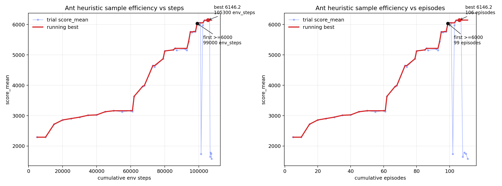

学习，超越梯度：用 coding agent 维护「会生长的代码策略」
Learning Beyond Gradients
864、MuJoCo Ant 到 6146、HalfCheetah 到 11836.7、VizDoom 纯 CV 控制可用，整套 Atari57（342 条无人值守搜索）中位数 HNS 进入 PPO baseline 的区间。作者主张 HL 在可解释性、样本效率、抗 catastrophic forgetting（旧能力固化进 test / 文档）上更优，但承认它受代码表达力限制（解决不了 ImageNet 级感知、长程规划如 Montezuma），最终愿景是 NN + HL 的 System 1/2 混合架构。
①开源贡献 Open-source Artifacts
这是一篇带完整可复现实验仓库的博客，而非传统论文。作者把博客正文、所有实验的代码、trial 日志、CSV、样本效率曲线和录制视频都放进了同一个 GitHub repo（截至解读日 526 stars / 53 forks）。核心 artifact 我已逐一访问核实，链接均真实可达；唯一需要注意的是该仓库没有任何 LICENSE 文件（解读日 LICENSE / LICENSE.md / LICENSE.txt / COPYING 均返回 404），即默认保留版权、未授予开源许可，复用前需向作者确认。
| 类型 | 是否开源 | 内容 / 链接 |
|---|---|---|
| 代码 Code | ✔ | Trinkle23897/learning-beyond-gradients 含 atari/（pong、breakout、montezuma、atari57）、mujoco/（ant、halfcheetah）、vizdoom/、heuristic_learning/ 核心模块，以及每个任务的 heuristic_*.py 策略、trials.jsonl、*_summary.csv、sample_efficiency.png、README.md。语言构成 Python 77.4% / HTML 22.5%。 |
| 模型权重 Weights | ✘（不适用） | 方法本身不训练神经网络，因此没有权重产物。策略即纯 Python 代码文件。 |
| 数据集 Dataset | — 实验记录代替 | 无传统训练数据集；但开放了等价的「学习轨迹」：如 breakout trials.jsonl、atari57 聚合曲线 CSV、HNS 归一化表等。 |
| 环境 / Benchmark | ✔（依赖现成） | 评测基于 EnvPool（作者本人维护）上的 Atari / MuJoCo / VizDoom；只需 pip 安装即可，VizDoom 无需本地编译。Atari57 批量提示词模板亦开源：atari57_prompt_template.txt。 |
| 项目主页 / Demo | ✔ | 博客本体（中英双语）：GitHub Pages。仓库内含多段策略行为录像（如 Breakout 387/507/839/864、Ant 6146、VizDoom 10-seed、Montezuma 400 分回放）。 |
| License | ✘ 未提供 | 仓库无 LICENSE 文件，未声明任何开源许可证，默认 All rights reserved。可读可复现，但商用 / 再分发需联系作者。 |
复现入口（A.2 节给出，默认已 clone 仓库并装好 requirements.txt）覆盖：Pong 21、Breakout 387/507/839 中间节点、Ant residual MPC、HalfCheetah staged-tree MPC、VizDoom D1/D3 纯 CV、Montezuma 400 分回放。例如最简单的 Pong：
python atari/pong/heuristic_pong.py --policy ram --episodes 1 --seed 0
# 期望输出包含 episode=0 score=21.0 与 mean=21.000②研究动机与贡献 Motivation & Contribution
背景与问题：一个意外发现
起因非常工程化。作者在业余维护 EnvPool 时，想要一个比随机策略强很多、但又便宜可复现的策略来跑 CI 测试环境正确性——总不能每次 CI 都跑神经网络，太费测试资源。最初的问题只是：「能不能写一些便宜、可复现、比随机强很多的 heuristic，专门把环境跑到有信息量的状态？」
于是作者用 codex（gpt-5.4）写了一个完全不依赖 NN 的、基于规则的版本，结果远超预期：Breakout 一路 387 → 507 → 839 → 864 打到理论满分；Ant 纯 Python 程序先学会节律步态、再接上短视窗模型规划，上了 6000+ 分；HalfCheetah 到 11836.7；VizDoom 只用 cv2/NumPy 搓屏幕 CV 也能玩。最让作者震撼的不是分数，而是意识到：codex 没有训练任何神经网络，它在维护一套还能继续生长的软件系统。Breakout 最后长出来的策略远不止「球在左边就往左」，而是动作探测、状态读取、球/挡板检测、落点预测、卡住循环检测、回归测试、视频回放和实验记录的集合。
本文的切入点：被更新的对象，从「权重」变成「软件系统」
作者由此提出一个新概念：被迭代的对象已经不只是一个 policy 函数，而是一套带有 memory、反馈入口和回归机制的软件系统。深度 RL 的核心循环（state → action → feedback → update）依旧成立，但 update 的对象从神经网络参数换成了软件结构，update 的执行者从梯度下降换成了 coding agent。
核心贡献
- 提出并定义 Heuristic Learning（HL）/ Heuristic System（HS）：把「coding agent 消化多模态反馈、直接改写代码策略」这一过程形式化为一个新的学习范式，并系统地与 Deep RL 在 policy / state / action / feedback / update / memory 六个维度逐一对照。
- 给出一套可工作的「反馈闭环」工作流：不是只交一个
policy.py，而是让 agent 维护「探测动作观测 → 写状态检测器 → 写策略 → 跑完整回合 → 记录 trials/summary → 出视频/曲线 → 看失败模式 → 改策略 → 简化并回归」的完整闭环。 - 把 continual learning 重新表述为「软件维护问题」：旧能力固化成回归测试、固定 seed replay、golden trace、失败视频、版本 diff，从而把「怎么更新参数」变成「怎么维护一个持续吸收反馈的软件系统」，并提出健康 HS 必备的两个操作——吸收反馈、压缩历史。
- 提出「耦合复杂度（coupling complexity）」概念，刻画 coding agent 能维护多复杂的策略，并指出它不由代码行数决定，而由相互牵连的状态/规则/测试/反馈/历史的数量决定。
- 大规模实证：在 Atari（含完整 57 游戏、342 条无人值守搜索轨迹）、MuJoCo（Ant / HalfCheetah）、VizDoom（D1 / D3 纯 CV）上，在不训练 NN 的前提下取得与常见 Deep RL 同量级的结果，并全部开源可复现。
- 诚实地划出边界：用 Montezuma 作反例说明普通
if-else装不下长程规划，并据此提出下一步范式——NN + HL 的 System 1/2 分层混合架构。
③方法 Method
HL 的整体形态可以一句话概括：把「训练神经网络」替换成「让 coding agent 维护一套会生长的代码策略系统」。它与 Deep RL 共享 state / action / feedback / update 的闭环，但每个环节的载体都变了。下图（博客 banner 配图）形象地表达了核心隐喻——coding agent 像一条「输送智力的营养管道」，把反馈持续接进软件系统，让它自己迭代生长。

HL 与 Deep RL 的逐维度对照
作者用一张表把两种范式摆在一起。理解 HL 的关键是看到：它不是抛弃 RL 的框架，而是替换框架里每个组件的实现介质——把隐式的、不可读的神经网络对象，换成显式的、可读可删可重构的代码对象。
| 维度 | Deep RL | Heuristic Learning (HL) |
|---|---|---|
| Policy 策略 | 神经网络参数 | 代码：规则、state machine、controller、MPC、宏动作 |
| State 状态 | 通常是显式观测 | 显式写成变量、检测器、缓存等 |
| Action 动作 | 神经网络一次 forward 生成 | 执行代码逻辑生成 |
| Feedback 反馈 | 主要是固定 reward | 由 coding agent 按 context 提供：reward、testcase、日志、回放都算 context |
| Update 更新 | RL 算法对参数做梯度更新 | coding agent 直接改代码 |
| Memory 历史 | on-policy 几乎没有；off-policy 用 replay buffer | 显式记录 trials、summary、失败原因、回放、版本 diff |
方法核心一：HL 的反馈闭环（the HL loop）
作者强调最关键的「认知转变」在于：一开始他直接让 codex「写一个能解决 Breakout 的策略」，效果一般——因为低分没有解释力，agent 分不清是动作语义错了、状态检测错了、评测设置错了，还是策略结构本身不行。后来把任务改成「别只交 policy.py，要维护完整闭环」，任务的「形状」就变了。这个闭环长这样：
探测动作和观测
-> 写状态检测器
-> 写策略
-> 跑完整回合
-> 记录 trials.jsonl 和 summary.csv
-> 生成视频或曲线
-> 看失败模式
-> 改策略
-> 简化代码并做回归当人类介入次数随模型能力提升而减少，这个循环就能在「边界明确」的系统里自动闭合，实现用 HL 批量生产 HS：
环境反馈 / 测试失败 / 日志异常
-> coding agent 读 context
-> 修改 policy / test / memory
-> 重新运行
-> 把结果写回 trials 和 summary
-> 下一轮继续方法核心二：HL 怎么做 continual learning（旧能力如何不被遗忘）
这是本文回应「catastrophic forgetting」的核心。神经网络的遗忘是新数据把参数推向新任务、旧能力被覆盖。作者坦承 HL 也会忘——新规则修好一个 case 却破坏旧场景、新 memory 反复把 agent 带偏、测试太窄被策略钻空子、patch 改了公共接口让旧调用方悄悄坏掉、规则越堆越多到 agent 自己也维护不动。
所以 HL 不会自动解决 continual learning，而是把「防遗忘」变成更工程化的东西：旧能力可以被显式固化成回归测试、固定 seed 的 replay、golden trace、失败视频、版本 diff、明确写下来的失败方向。这与神经网络把经验隐式压进权重完全不同——HL 的历史是显式、可读、可删、可重构的。由此提出健康 HS 必备的两个操作：
- 吸收反馈（absorb feedback）：把新失败、新日志、新 reward 写回系统；
- 压缩历史（compress history）：把一堆局部补丁折回更简单、更可维护的表示。
方法核心三：耦合复杂度（coupling complexity）
作者定义耦合复杂度 = coding agent 能维护多复杂的策略来支持 HL，也就是「一次更新必须同时照顾多少相互牵连的状态、规则、测试、反馈和历史」。它不能按代码行数算：500 行但模块边界清楚、测试完整、状态可复现的策略可能很好维护；80 行但每行互相牵制、没日志没回放的策略可能一碰就崩。它受两侧因素制约：
- 代码一侧：模块边界、接口稳定性、测试覆盖、日志观测性、回滚成本、状态可复现性。好的模块化把全局耦合切成局部耦合；好的测试让 agent 不必每次在脑子里模拟整个系统。
- agent 一侧：模型能力、上下文长度、memory 质量、工具质量、迭代速度。更强的模型能同时处理更多相互作用；更长上下文少丢线索；memory 留下跨轮经验；搜索/定位/运行/回放等工具把认知负担搬到外部。
由此得到几条判断：反馈越清楚，单位 agent 智力能维护的耦合复杂度越高；同等工具反馈下模型越强能处理的耦合复杂度越高；模块化/测试/回放会把一部分耦合复杂度转移到环境里；memory 和工具提高 agent 有效上下文；只增长不压缩的 HS 会让耦合复杂度持续上升直到超过维护能力。
frame_skip=1、reward_clip=False、sticky_action=0。③ 所有真正 step 过环境的 probe/debug/trial 都必须计入 cumulative_env_steps（样本效率口径诚实）。④ 硬约束：不训练 NN、不读环境源码/测试/ROM 细节/隐藏状态；native_obs 模式只能用原生 obs，ram 模式才可用 info["ram"]。⑤ 停止规则：Atari frame budget = 20M，刷新 best score 后必须进入「代码简化」阶段、确认不掉分才保留——简化即一种工程正则化。
④实验评估 Evaluation
评测设置
- Benchmark / 环境：均基于 EnvPool。Atari（Pong、Breakout、Montezuma、完整 Atari57）考察离散动作、几何/感知/长程规划；MuJoCo（Ant 8 关节、HalfCheetah）考察连续控制与动力学；VizDoom（D1 Basic、D3 Battle）考察第一人称视觉控制。
- 对比基线：常见 Deep RL 结果，重点是 OpenRL Benchmark 保存的 PPO2（OpenAI Baselines）与 CleanRL EnvPool PPO 的训练曲线。
- 评价指标：单环境用原始 episode 得分（越高越好）；跨 Atari 用 HNS（human-normalized score）——把每个游戏分数按人类基线归一化后再比较，1.0 即达人类水平。样本效率用「分数 vs 累计环境步」曲线衡量；注意：coding agent 读日志/写代码/看视频的开销没有折算进计算成本，比较的是环境交互效率。
单点结果一：Atari Breakout —— 打到理论满分 864
RAM 模式下，策略从 387 → 507 → 839 → 864 一路爬到理论最高分（默认配置三局复测 864/864/864）。每一跳都对应一个被 agent 定位的具体失败模式 + 一个机制：
| 分数 | 失败模式 → 加入的机制 |
|---|---|
| 99 → 387 | 能稳定接球（RAM 截距），但把球送进一个不死也不清砖的循环 |
| 387 → 507 | 打破循环：长时间无 reward 就在预测落点上周期性加偏移，把球打出局部循环 |
| 507 → 839 | 处理高速低位球：加 fast_low_ball_lead_steps=3，避免过度前视带偏挡板 |
| 839 → 864 | 后期收偏移：过第一面墙后卡住偏移只在离挡板远时生效、快接球时逐步收掉；外加补一步动作延迟的小漂移补偿 |
更说明问题的是能力迁移：在 RAM 版本摸出几何控制 / 打破循环 / 后期收偏移这些结构之后，把状态读取层从 RAM 换成纯 RGB 检测器，纯图像版 7 个本地回合后第一次到 864，仅花 14,504 个本地环境步。作者诚实强调：这 14.5K 是「迁移预算」，不能写成「纯图像从零 14.5K 步到满分」。

单点结果二：MuJoCo Ant —— 节律步态 + residual MPC，到 6146
作者没有预先指定「用 CPG」或「用 MPC」，只给约束：别训练 NN、能本地复现、每轮留记录、继续把分数往上推。codex 自己提出第一版四腿相位振荡器（左右腿反相 CPG + PD），一上来 5 个随机种子均值就 2291。真正的跃迁来自 residual MPC——保留节律步态作为基础反射，每个真实步在本地 MuJoCo 模型里采样几十条残差动作序列、打分后只执行第一个残差动作，下一步重新规划并用上一轮计划热启动。完整轨迹：
| trial | score (mean) | 累计环境步 | 机制 |
|---|---|---|---|
| ant_lr_cpgpd_v1 | 2291.9 | 5,000 | 左右腿反相 CPG + PD |
| ant_yawaxis_grid_v2 | 2857.9 | 20,000 | 偏航反馈 + 重调参数 |
| ant_h3_428_v1 | 3162.0 | 50,000 | 二阶/三阶谐波 |
| ant_mpc_residual_v1_ep1 | 3635.5 | 62,000 | residual MPC，视窗=6 候选=32 |
| ant_mpc_residual_cfg4_eval5 | 3964.7 | 67,000 | 视窗=8 候选=48 |
| ant_mpc_residual_cand07_eval5 | 4647.1 | 73,000 | 围绕 MPC 配置局部搜索 |
| ant_mpc_residual_narrow04_eval5 | 4871.3 | 79,000 | 降 z 目标、增大 kp/候选数 |
| ant_mpc_residual_warm02_eval5 | 5165.2 | 85,000 | 热启动残差计划 |
| ant_mpc_fast065x060_sigma008_clip012 | 5759.4 | 95,000 | 更快步态 + 更大残差 |
| ant_mpc_term001_ep1 | 6054.5 | 100,000 | 终端速度代价 |
| ant_mpc_default_adaptive_ep1 | 6146.2 | 106,300 | 速度自适应相位 + 支撑期 |
最终 6146.2（5 seeds 均值）进入常见 Deep RL 结果的量级。其价值在于模块可拆：相位、支撑期、速度自适应、滚转/俯仰/偏航反馈、脚部接触、模型内展开、残差平滑、终端代价、热启动衰减——人类能写其中一两个模块，但要在短时间内同时照顾实验记录 / 代码 / 视频 / 失败方向，难度完全不同。

单点结果三：MuJoCo HalfCheetah —— 11836.7
策略 mpc-staged-tree-asym-pd-cpg：先用 CPG/PD 形成高分步态，再用短视窗模型评分 + staged swing-amplitude schedule 修正动作。seeds 100..104 复测：均值 11836.7、最小 11735.0、最大 12041.2，同样进入常见 Deep RL 量级，且全程用可解释的步态/姿态规则。

单点结果四：VizDoom —— 纯 CV、零 NN 训练
- D1 Basic：纯 CV 版用亮度阈值、形态学 close/dilate、连通域找 medikit，用 bbox 中心决定转向/前进；血量高且离血包太近时先 staging、等掉血再吃。10 seeds：mean=0.9441、min=0.2900（object/info 版上限约 1.01）。只依赖 pip EnvPool +
render()屏幕像素 + 公开HEALTH。 - D3 Battle：更像 FPS smoke policy，把行为拆成三个闭环——看见怪就杀 / 低血低弹找补给 / 长时间无目标高速探索。屏幕侧 cv2+NumPy 做颜色阈值与连通域，info 只用公开 game variables（
HEALTH/AMMO2/HITCOUNT/DAMAGECOUNT/KILLCOUNT）。10 seeds：mean=557.0、min=440.0。早期试过的地图/object info/seed 特判后来都删掉了。
规模化结果：Atari57 —— 342 条无人值守搜索
这是验证「方法离开单个漂亮案例后还剩多少」的关键实验：57 游戏 × 2 输入（ram + native_obs）× 3 次重复 = 342 条 coding-agent 搜索轨迹，全程无人工提示，每个 agent 拿同一模板、不同 ENV_ID/OBS_MODE/REPEAT_INDEX 自己跑到停止。结果按口径汇报：
| 口径 | Codex (HL) | PPO2 / Baselines | CleanRL EnvPool PPO |
|---|---|---|---|
| median HNS @ 1M 步（native / ram） | 0.32 / 0.26 | 明显高于图中 PPO 早期曲线 | |
| median HNS @ 9.7M 步（native / ram） | 0.81 / 0.59 | PPO 曲线 @10M ≈ 0.88 / 0.92 | |
| final median HNS（每游戏取 best input） | 0.83 | 0.80 | 0.98 |
| best single run median HNS | 1.18 | — | — |
读法要克制：@1M 步处 HL 中位数已明显高于 PPO 早期曲线，说明环境交互效率高；但 PPO 充分训练（10M 步）后中位数仍略高。作者反复声明：HL 的 agent 计算开销没折算进来，这不能替代严格训练曲线比较，只说明「一个还很粗糙的无人值守批量流程，在完全不看中途结果时，已能把 Atari57 中位数推进到接近这些 baseline 的区间」。

逐游戏方差很大，揭示了 HL 的能力边界：在 Breakout、Krull、DoubleDunk、Boxing、DemonAttack 上 HL 与 PPO 都远超人类；在 Asterix、Jamesbond、Centipede、Bowling、Skiing、Tennis 这类几何/规则清晰的游戏上 HL 相对突出；但在 Atlantis、VideoPinball、UpNDown、Assault、RoadRunner、StarGunner 这类复杂感知任务上 PPO 明显强很多。

作者点出 Atari57 最有意思之处：样本效率的来源变了。传统 NN 要在每个环境从高维输入重新学表示、信用分配、动作含义；而 codex 做的是把环境拆成可维护的小程序系统（射击游戏的瞄准/躲避、接球游戏的反弹、躲避游戏的位置规则、环境包装器细节，以及每个环境自己的失败实验记录）。
边界案例：Montezuma's Revenge —— 表达力的天花板
之前单独搜 Montezuma 的状态图搜索能把钥匙距离从 72 推到 28，但 reward 仍是 0。Atari57 纯图像批量里有一条无人值守 run 到了 400.0 分（best 回放 repair_replay_r1_t19734，seed 10001，1769 环境步），但本质是一条 86 个宏动作组成的开环路线。这恰恰暴露了表达力问题：普通 policy.py 状态机很难装下这类路线——动作必须对齐时机、失败后要能恢复、中间状态要能重新进入计划。作者认为这类失败「对 HL 很有价值」，因为它指明了下一层抽象大概该长什么样：可组合宏动作、可恢复搜索状态、搜索、长期 memory。
⑤洞见 Insights
局限与未来
作者罕见地把边界划得很清楚：
- 受代码表达力限制。HL 做不了所有 NN 能做的事——复杂感知（作者直言「想不出有 agent 能搓出纯 Python、不训 NN 去解决 ImageNet」）、从高维原始输入的长程泛化、本质需要学到表示的任务。
- 长程规划需要更强的程序形态。Montezuma 显示普通
if-else不够，需要可组合宏动作 / 可恢复搜索状态 / 长期 memory 这类下一层抽象。 - 「只增不压」会失控。耦合复杂度若持续上升而无压缩，HS 终将超过维护能力变成屎山。
- 混合架构尚处早期。提出的下一步是 NN + HL 的 System 1/2 分层结构：浅层专用 NN（感知/分类/物体状态估计）+ HL（数据处理、规则、测试、回放、memory、安全边界、局部恢复）共同充当 System 1；LLM agent 充当 System 2，给 HL 提供反馈、改进数据，并周期性提取 HL 生成的数据来更新自身。机器人场景可继续拆成「关节级 → 肢体级 → 全身平衡 → 任务级」的层级 HL。未解的核心难题是：HL 产出的特定数据分布如何不让 LLM 的周期性更新崩溃——一个经典的 post-training 稳定性问题。
与相关工作的关系
按作者自身的框定：HL 的前身是专家系统 / 规则系统，过去因人力维护成本太高而式微；coding agent 的出现改变了这条曲线，使其重新可行。在范式演进的脉络上，作者把它接在 pretrain → RLHF → large-scale RL / RLVR 之后：「凡是可以验证的，都开始能被解决」；而 HL 借助 RLVR 产出的 agentic coding 能力，把这句话往前推一步——「凡是可以被持续迭代的，都开始能被解决」，并据此部分解决 online learning 与 continual learning。它与 Deep RL 不是替代而是互补：RL 负责需要学习表示的部分，HL 负责可显式编码、可回归、可维护的部分。